Backend from first principles · annotated walkthrough
If the method is what you want done, the route is where you want it done. Static paths, path parameters, query strings, nesting, versioning, and the catch-all at the end. Every concept paired with the capture that proves it.
In the previous video we talked about different HTTP methods and how they are important in the HTTP semantics. In a way, all these HTTP methods describe your intent — you can say these HTTP methods express the what of a request. And the role of routing is that it expresses the where of a request.
Posts 04 and 05 took apart the HTTP message. This one takes apart the second field of its very first line — the path — and shows how a server turns it into a decision about which code to run. Before any of that, it's worth naming the parts of a URL, because the whole post is about telling them apart.
Six parts, and only two of them are routingThe path and the query string are what the server matches on. The rest was already resolved before the request arrived.
Routing has its own small vocabulary, and two of the terms sound almost identical while meaning different things. Fixing them now saves confusion later.
A pattern the server knows about, paired with the code to run when a request matches it. GET /api/books is a route. So is GET /api/users/:id. The word is used loosely for both the pattern and the URL that matches it.
The function that runs when a route matches. It receives the request, does the work — query a database, check permissions, build a response — and returns something. Routing's entire job is choosing which handler to call.
A variable slot inside the path. In /api/users/123 matched against the pattern /api/users/:id, the 123 is a path parameter. It identifies which resource you mean.
A key–value pair after the ?. In /api/search?query=some+value, query=some+value is a query parameter. It modifies how you want the resource — filter it, sort it, page through it.
The two are easy to confuse because both carry data from client to server. The distinction is semantic and it runs through everything below: path parameters identify, query parameters modify.
The analogy this post runs on
A library. The method is what you intend — borrow, return, donate. The path is where you're standing: the building, the floor, the shelf, the specific book. A path parameter is the shelf number, because without it "the shelf" means nothing. A query parameter is what you say to the librarian once you're there — "only the ones in French," "sorted by date," "just the first twenty." And the catch-all is the sign at the end of a corridor that says nothing down here, rather than leaving you to wander.
The opening sketch, redrawnPost 04 covered the left half. This post is the right half, and the key idea is that the server needs both before it can decide anything.
Where do you want to send your intention? Which resource do you want to perform your action on? You need to tell the server where you want to go. For example, you have a request and the method is GET — your intention is fetching some data from the server — and your route path is
/users, and the server sends you an array of users.
The second sketch, redrawnThe scribbled version in the notes is this: GET → /users → data, with the two joining into something that talks to a database and comes back up. That's the whole shape of a backend request.
The combination of these two — your intention, your action, and your route, the URL parameters, the address — the server takes this and maps it to a particular handler or a set of instructions. And to summarize it, you can say that routing is basically mapping URL parameters to server-side logic. That's all there is to it.
Why it takes both, and not just the path
A path on its own is ambiguous. /api/books could mean "give me the books" or "here is a new book" — identical address, opposite intentions. The method resolves it.
So the server builds its lookup key from the two together. GET /api/books and POST /api/books are different routes that happen to share a path, handled by different functions that may have nothing in common. This is why post 04 insisted the method isn't decoration: it's half of the primary key.
Analogy
A building's address plus what you're there to do. "42 Wilson Street, to deliver a parcel" and "42 Wilson Street, to collect one" send you to two different desks. Nobody is confused by this in a building, and servers aren't either — but people new to APIs often expect the URL alone to identify the operation, and it doesn't.
A note on the word "resource"
In /api/books, books is called a resource — the noun the route is about. The convention is that paths name things and methods name actions, so you write DELETE /api/books/12 rather than GET /api/deleteBook?id=12.
That convention is most of what people mean by REST, which gets its own treatment later in the series. For now it's enough to know that routes are conventionally nouns, and that this is why they read almost like English.
Everything below is fired from one small React page, and watched through an intercepting proxy — the same setup as posts 04 and 05.
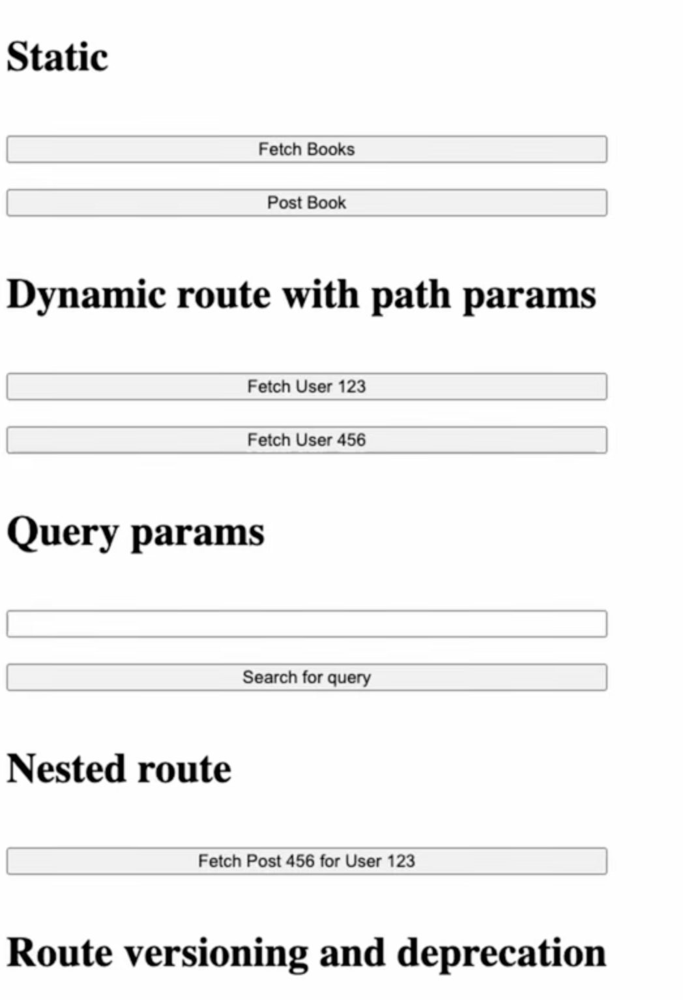
The first two examples that we discussed — the
/api/booksfor GET and POST — these kinds of routes are called static routes. Why are they called static routes? For obvious reasons: because they don't have any variable parameters inside the route.
GET /api/books HTTP/1.1 Host: localhost:3001 HTTP/1.1 200 OK Content-Type: application/json; charset=utf-8 Content-Length: 102{ "data": [ { "id": 1, "title": "Book 1", "author": "Author 1" }, { "id": 2, "title": "Book 2", "author": "Author 2" } ] }
POST /api/books HTTP/1.1 # same path, different method Host: localhost:3001 Content-Length: 45 HTTP/1.1 200 OK # creates a book, then returns the collection again
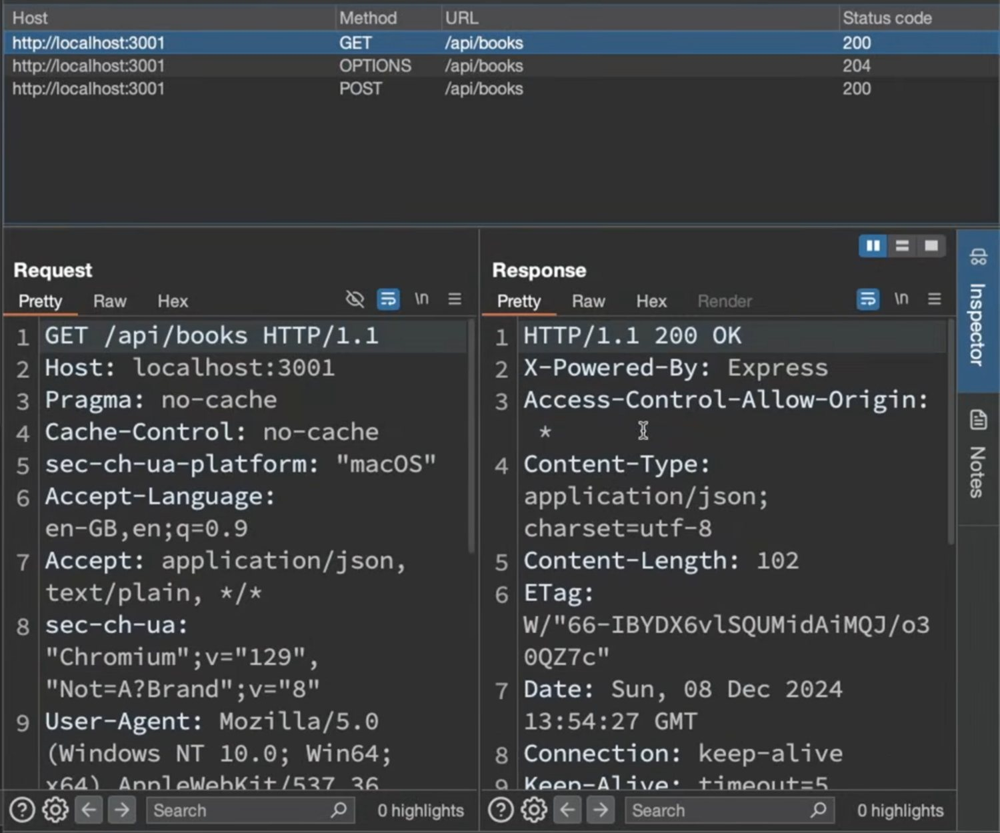
GET /api/booksThree rows in the history: the GET, the preflight OPTIONS, and the POST. Note the second and third share the path of the first.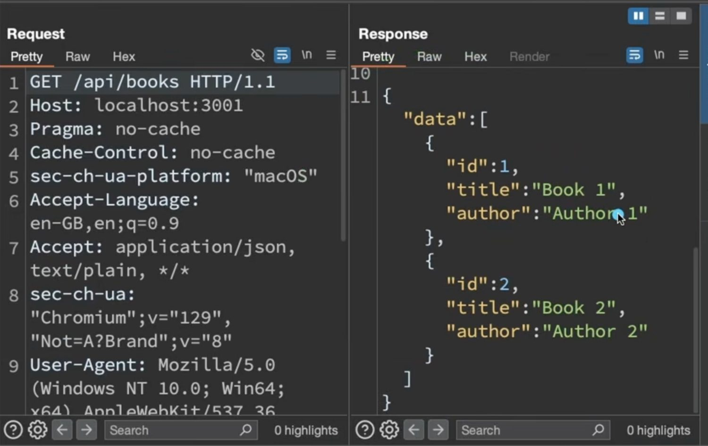
/api/books returnsA data array of two books. The path had no variables in it, and the handler behind it always does the same kind of work — that's what makes it static."Static" means the pattern contains no variables
The string /api/books is a constant. It is the same on every request, it matches only itself, and the handler behind it always does the same kind of work. Nothing in the path has to be extracted or interpreted.
That's the entire definition. It isn't about the response being static — the list of books changes whenever someone adds one. It's about the pattern having no slots in it.
Method plus path is the primary keyThis is the mechanism behind post 05's 405: the router found the path but no handler registered for that verb.
One consequence worth internalising
Because the key includes the method, you never need to encode the action in the path. A route called /api/getBooks is redundant at best and misleading at worst — it invites someone to eventually write POST /api/getBooks, which reads as nonsense and defeats every convention a proxy or cache relies on.
The method is GET and the route is
/api/users/123. In this case this is supposed to express the ID of the user. When we make this request the server can extract this particular ID from the route path, and it can do whatever operation it wants — fetching the user from the database and returning the details of the user.
GET /api/users/123 HTTP/1.1 Host: localhost:3001 HTTP/1.1 200 OK Content-Length: 43{ "message": "User ID is 123" }GET /api/users/456 HTTP/1.1 # same route pattern, different value HTTP/1.1 200 OK{ "message": "User ID is 456" }
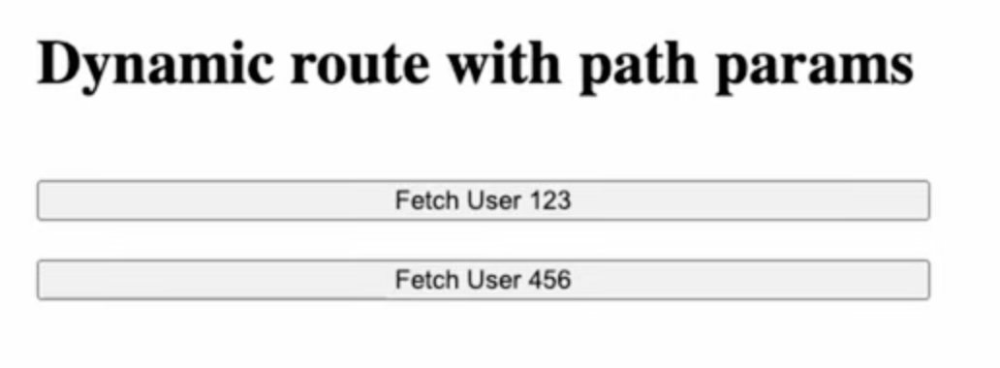
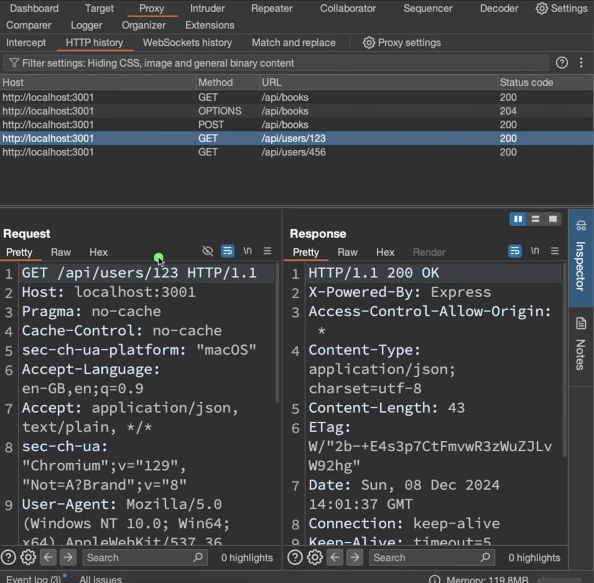
GET /api/users/123The history now shows /api/users/123 and /api/users/456 as separate entries, both 200. To the server they matched the same pattern; the difference arrived as a parameter.Why you can't just register both
You have a million users. You are not going to write a million routes. So instead of matching an exact string, the server matches a pattern with a slot in it, and pulls whatever landed in that slot out as a named value.
That named value is the path parameter. One pattern, unlimited URLs, one handler.
Just to give you an idea, this is what the route matching part in the server looks like. Let's say the handler is called
r, sor.get— and in the matching part it is saying the string/api/users/:id. This part matches the method and this part matches the route.
The matching, segment by segmentTwo literals that must match exactly, one slot that accepts anything and hands its contents to the handler under the name you chose.
It looks like a number, but in route parameters or in route paths, whatever — numbers, special characters — everything is converted into a string. So this thing gets inserted into this slot, this dynamic parameter slot which we are calling
id.
Three things that trip people up
:id is what Express, Rails, Laravel and most others use, but it isn't part of HTTP. Some frameworks write {id} or <id> or [id]. The idea is universal; the punctuation is house style.params.id is "123", not 123. Forgetting this produces a genuinely common class of bug: "123" === 123 is false in JavaScript, and a database query comparing a string to an integer column may quietly return nothing. Convert explicitly, and validate while you're there./api/users/:id matches /api/users/123 but not /api/users/123/posts. The slash is a boundary the parameter cannot cross — which is exactly what makes nesting work in section six.Analogy
A form with a blank on it. "Please deliver to flat ___ , Wilson House." The building and the word "flat" are printed; the blank takes whatever you write. One form, three hundred flats — and you don't print three hundred forms.
Security note · a path parameter is user input
It looks like part of your own URL structure, which makes it feel trustworthy. It isn't. 123 is whatever the caller typed, and so is ' OR 1=1-- and ../../etc/passwd. Path parameters flow straight into database queries and file lookups, which makes them a first-class injection surface — treat them exactly as you would a form field.
The subtler risk is IDOR — insecure direct object reference. GET /api/users/123 works; the attacker tries /api/users/124. If your handler fetches by ID without checking whether this caller may see that user, you have just published your database one row at a time. The route matched correctly and the bug is entirely in what the handler forgot to ask. This is authorization, from post 03, at the exact point where it usually goes missing.
The route is
/api/search?query=some+value. This part we understand —/api/searchis the address we want to go to. The thing to focus on here is the query part: the question mark, and the key and the value. This is called a query parameter.
GET /api/search?query=some+value HTTP/1.1 Host: localhost:3001 HTTP/1.1 200 OK Content-Length: 44{ "message": "Search results for: some value" }
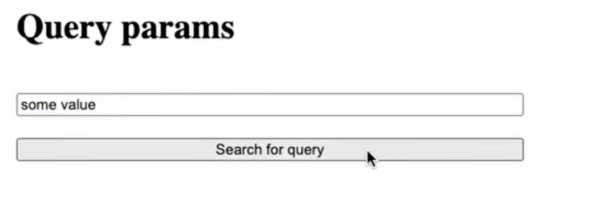
? rather than in the path — because it describes the search, not the resource.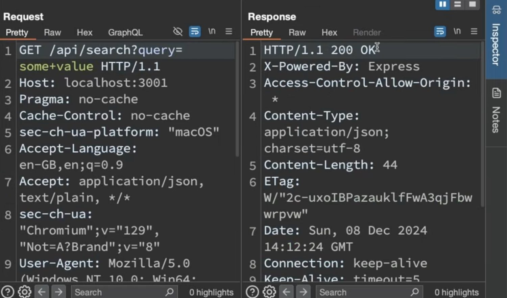
GET /api/search?query=some+valueThe path is /api/search; everything from the ? onward is the query string. Note the space encoded as +, and that the response echoes it back decoded.Reading the syntax
? opens the query string. key=value is one pair. & joins more: ?page=2&limit=20&sort=desc.
And note some+value in the capture — the space became a +. Query strings can't contain raw spaces, so they're URL-encoded: spaces become + or %20, and anything else with special meaning becomes a % escape (& → %26, / → %2F). The server decodes before your handler sees it, which is why the response says some value with a space.
In POST requests or PUT requests we have the body of the request — we can use the body to send some kind of data. But in the case of GET requests, in REST APIs, GET requests don't have a body. So how do you want to send some value in a GET request?
Let's suppose we want to send it in the path parameter. What will it look like?
/api/search/some value. Technically it's possible, but it's very hard to maintain and it defeats the whole purpose of REST APIs — providing semantic expressions to API endpoints.
The rule that decides which to useAsk whether the value is part of what you're asking for or part of how you want it served. Identity goes in the path; everything else goes in the query.
For example, let's say it's a request about fetching paginated data — you want to fetch a list of books which are paginated. The server returns an object, and inside
datayou have an array of books, and it returns a set of metadata about the response: total, current page, total pages.
Pagination, the canonical useNote the shape of the bargain: the server returns not just the slice but enough metadata for the client to ask for the next one without guessing.
Why GET has no body — and the honest caveat
A GET is a request to read something, and everything needed to identify what you want belongs in the URL. That's what makes a GET bookmarkable, linkable and cacheable: the URL is the whole request. Put criteria in a body and you lose all three.
The caveat, since you may run into it: HTTP doesn't strictly forbid a body on a GET. But proxies may strip it, caches will ignore it, and many client libraries refuse to send one. In practice the rule holds — if it's a read, it goes in the URL.
The exception you'll eventually meet is a search so complex it won't fit in a URL (length limits sit around 2,000 characters in practice). The usual answer is a POST to a /search endpoint, knowingly trading cacheability for expressiveness.
Security note · query strings are logged everywhere
Paths and query strings are written to server access logs, proxy logs, CDN logs and browser history, and leak sideways via the Referer header from post 04. Bodies generally aren't.
So anything secret must never travel in a query string. A password reset link like ?token=abc123 is a real and recurring vulnerability: it sits in logs indefinitely, and if the landing page loads any third-party script, the whole URL — token included — is handed to that third party in the Referer. Tokens belong in headers or bodies, not in URLs.
This is not really a type of routing, it's just a practice that you will see everywhere — because in REST APIs, for semantic expression, we often have to resort to nesting different types of resources, and the nested route is typically the result of that.
GET /api/users/123/posts/456 HTTP/1.1 Host: localhost:3001 HTTP/1.1 200 OK Content-Length: 33{ "message": "User 123 - Post 456" }
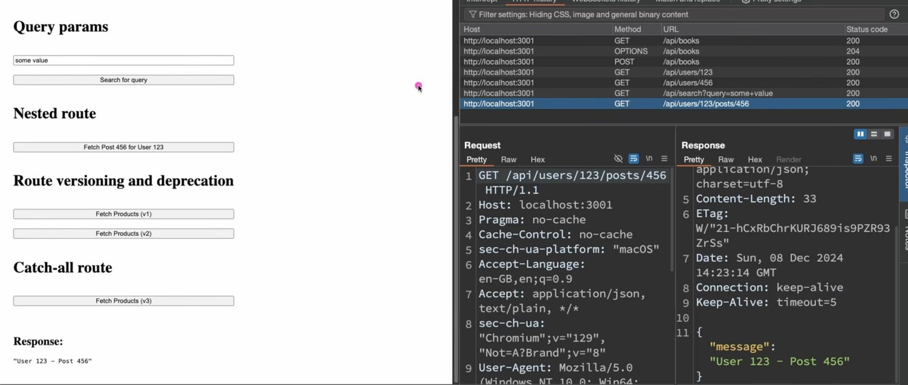
GET /api/users/123/posts/456Two path parameters in one pattern. The response confirms the server pulled both out: User 123 - Post 456.What's actually new here
Nothing, mechanically. This is one pattern — /api/users/:userId/posts/:postId — with two slots instead of one. The matching works exactly as in section three, twice.
What's new is what it expresses: a relationship. The post belongs to the user. Reading left to right, each segment narrows the previous one, and the URL becomes a sentence.
We can stop at different phases here. If you do
/api/usersit will return a list of all users. If we go one level deep again,/api/users/123— this is a unique route in itself. And that handler will return the information of this user whose ID is 123.
Stopping at each levelYou aren't obliged to register every level, but a well-designed API usually does — and each one means something a client might genuinely want.
Analogy
A postal address written backwards. Country, city, street, building, flat — each field only makes sense inside the one before it. "Flat 4" alone is useless; "Flat 4, 12 Wilson Street, Edinburgh" is a place. Nested routes are addresses with the same property.
When not to nest
Nesting is a convention, not an obligation, and it stops paying off quickly. /api/orgs/3/teams/9/users/123/posts/456/comments/12 is technically fine and horrible to work with — and usually redundant, since comment 12 is unique on its own and the rest is decoration.
The common rule of thumb is one level of nesting, occasionally two. Beyond that, expose the deep resource directly (/api/comments/12) and let filtering handle the relationship (/api/posts/456/comments or /api/comments?postId=456).
There's a security edge here too. A nested URL looks like it enforces the relationship, and it doesn't. Nothing stops someone requesting /api/users/999/posts/456 where post 456 belongs to user 123. If your handler reads only the post ID and ignores the user ID, it will happily serve it. The path expressed a relationship; only your code can check one.
This looks pretty much like our earlier request except it has this keyword, which is
v1— it says/api/v1/products. And if you look at the second request it saysv2. This is called route versioning. It is a very common practice in API endpoints.
GET /api/v1/products HTTP/1.1 HTTP/1.1 200 OK{ "data": [ { "id": 1, "name": "Product 1", "price": 100 }, { "id": 2, "name": "Product 2", "price": 200 } ] }GET /api/v2/products HTTP/1.1 HTTP/1.1 200 OK Content-Length: 92{ "data": [ { "id": 1, "title": "Product 1", "price": 100 }, { "id": 2, "title": "Product 2", "price": 200 } ] }
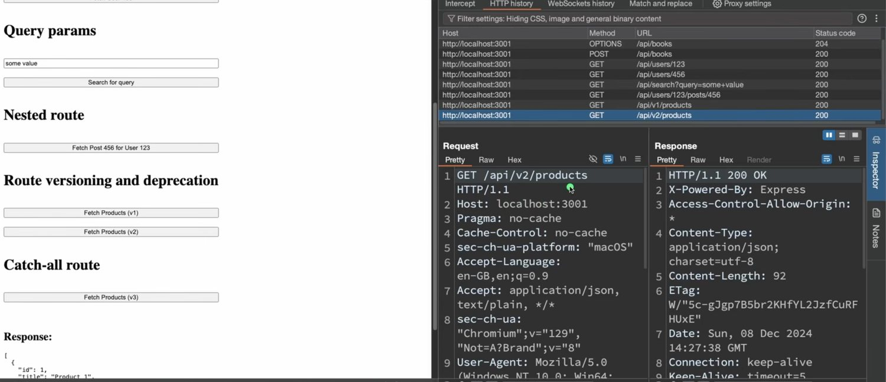
GET /api/v2/productsThe history by now holds every route in this post. The version sits in the path like any other segment — the router doesn't treat it specially, which is precisely why the trick works.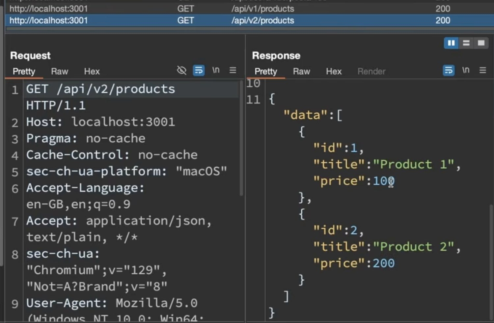
200s, two live versions. The v2 body uses title where v1 used name — the entire breaking change, and both callers are served.The difference is one field name — and that's the point
name became title. Trivial to type, catastrophic to deploy: every client reading product.name gets undefined the moment you ship it. That is a breaking change — one that requires the caller to change their code.
And you can't coordinate the deployment. Mobile apps sit on phones for months. Partner integrations are written by people you've never met. There is no moment at which "everyone has updated."
Your first option is changing the whole route — you can say
/api/new-products. Or what you can do is add that to your versioning: in version one of our API we were serving responses in this format, and new requirements came in, and in version two we are serving in this format.
What versioning actually buysNot the ability to change things — you always had that. The ability to change them without synchronising every client on earth to your deploy.
You can even eventually deprecate v1. You can send a notice to your frontend engineers that after v2 is released, v1 is deprecated — so in the next release all the engineers can migrate to v2. They have a window where they have the opportunity to migrate.
Deprecation is a process, not a deletion
Deprecated means "still working, but don't build anything new on it, and move off it." It is a warning with a deadline attached, and the gap between the warning and the deletion is the whole value of the practice.
In a serious API the steps are: announce it; return a Deprecation and Sunset header on every v1 response so automated clients can notice; watch the traffic on v1 fall; and only remove it when it's near zero. Removing it on schedule regardless of traffic is how you break a customer you didn't know you had.
Worth noting that URL versioning isn't the only option — some APIs version through a header (Accept: application/vnd.example.v2+json), which keeps URLs stable at the cost of being invisible in a browser address bar and harder to debug. Putting v1 in the path wins on legibility, which is usually the right trade.
What counts as breaking
Removing a field, renaming one, changing its type, adding a required parameter, or making validation stricter — all breaking. Adding an optional field or a new endpoint generally isn't, provided clients ignore what they don't recognise. That asymmetry is why mature APIs grow by addition and almost never by subtraction.
We are sending requests to a route which the server does not serve. We are doing
/api/v3/products— at this point the server does not serve responses for this route, it does not have a handler.
GET /api/v3/products HTTP/1.1 Host: localhost:3001 HTTP/1.1 404 Not Found Content-Type: application/json; charset=utf-8 Content-Length: 29{ "message": "Route not found" }
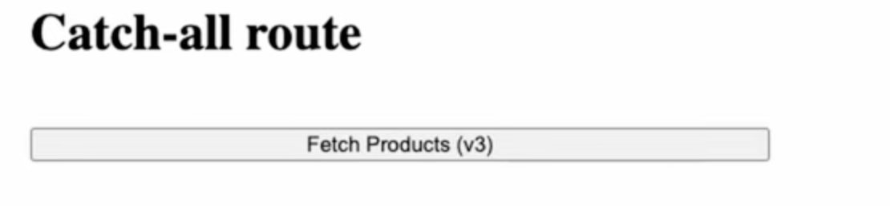
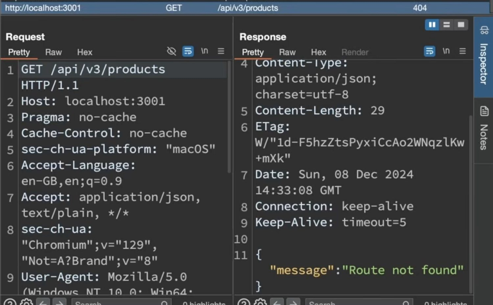
404 Not Found, in JSONThe status column reads 404 and the body is {"message": "Route not found"} — the API's own error shape rather than a framework HTML page. That consistency is the whole point of the catch-all.Typically what the server will do is, in the end, after serving all the different routes and all the methods associated with those routes — in the end it will do
/*. Whatever request, after going through all the previous route-matching algorithms, whatever request reaches here will be mapped to a handler, and that handler will send a user-friendly message.
Fall-through, in orderThe router walks its table top to bottom. The catch-all isn't clever — it's simply the last entry, and it matches everything.
So instead of just sending a null response, which is the default behaviour if you don't do catch-all handling, we are just sending a user-friendly message to let the client know that we don't cater to this endpoint.
Why a default 404 isn't good enough
Without a catch-all, an unmatched request still gets something — usually the framework's stock HTML error page. Which means your JSON API, on its worst day, hands a client an HTML document. The client's response.json() throws a parse error, and the developer on the other end spends an hour debugging their own code before realising the endpoint never existed.
A catch-all makes failure consistent: same content type, same error shape, every time. It costs three lines and removes an entire category of confusing bug.
Analogy
The else branch at the end of a long chain of conditions. You could leave it out and let control fall off the end, but then the failure is silent and shapeless. Writing it means every possible input has a defined outcome.
Security note · what your 404 page reveals
Two things worth getting right. First, keep it terse — {"message": "Route not found"} is ideal. Framework defaults sometimes echo the requested path back into the page, which is a reflected-XSS opportunity if it isn't escaped, and sometimes include a stack trace, which is the disclosure problem from post 03 all over again.
Second, be consistent. If unknown routes 404 but existing-yet-forbidden routes 403, an attacker can map your entire private API surface by watching which paths answer which — the same 403-versus-404 tension from post 05, now at the routing layer rather than the record layer.
The whole post in one paragraph
The method is the what and the route is the where; a server joins the two into one lookup key and maps it to a handler. That's the definition, and everything else is a refinement of it. A static route is a fixed string with no variables in it — GET /api/books and POST /api/books are two distinct routes that merely share a path, which is why a mismatched verb is a 405 rather than a 404. A dynamic route replaces one segment with a slot, /api/users/:id, so a single pattern serves a million URLs; whatever lands in the slot arrives as a string and is user input like any other, which is where IDOR bugs come from. Query parameters ride after the ? and do a different job: path parameters identify, query parameters modify — filter, sort, page — and they exist because a GET has no body and its URL must carry everything. Nested routes stack slots to express a relationship, each level a valid route in its own right, and the nesting expresses a relationship it cannot enforce. Versioning puts v1 and v2 in the path so a breaking change can ship without every client changing on the same day, with deprecation providing the window. And the catch-all sits last in the table, matching whatever survived, so that an unknown route fails in your API's own shape rather than the framework's.
books, users. Paths name things; methods name actions.https:// — which protocol./ to the ?. What the router matches on.?. Key–value pairs joined by &.#. Never sent to the server at all.+ or %20, & as %26.?. Modifies how you want it. Optional and unordered./users/123/posts/456./* registered last, matching anything that fell through. Returns a consistent 404.v1, v2 in the path so incompatible shapes can coexist.Referer header.If you remember three things
One — the method and the path together form the key, so the same path can safely mean several different operations and the verb is never redundant. Two — path parameters identify and query parameters modify, and choosing correctly between them is most of what makes an API readable. Three — a route that looks like it enforces a relationship or an identity enforces nothing at all; every path parameter is untrusted input, and the check has to live in the handler.